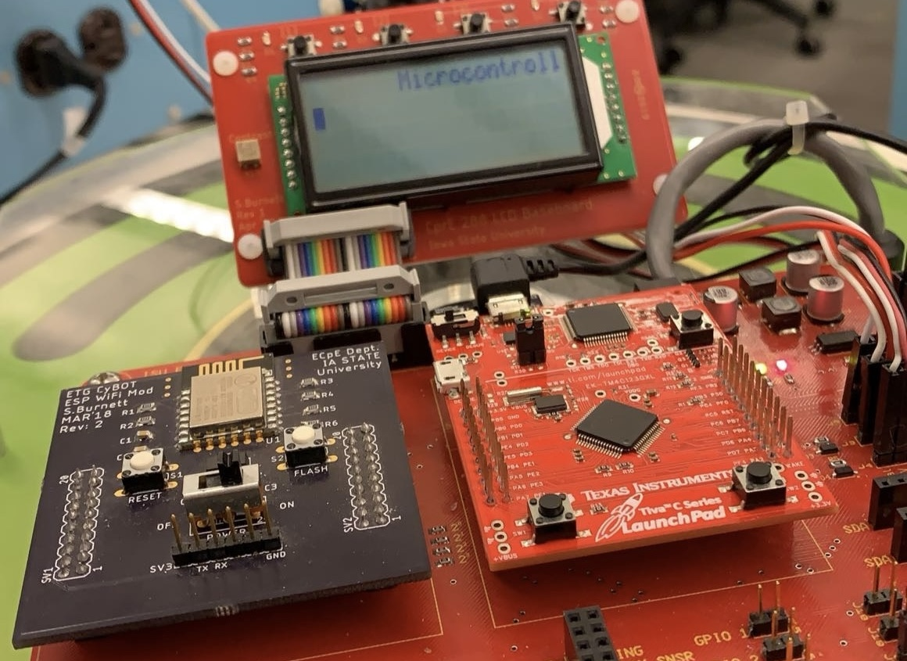

Embedded Systems Roomba Control
Programmed a microcontroller in C to remotely control a Roomba.
details
In this project, we developed a movement and navigation system in C
that remotely controlled an iRobot Create 2. We were ultimately able
to navigate the robot through an obstacle course without any visual
cues, avoiding obstacles and holes while staying in bounds. This
system used ultrasonic and infrared (IR) sensors for real-time data
acquisition, and we utilized General-Purpose Input/Output (GPIO)
interfaces and Universal Asynchronous Receiver-Transmitter (UART)
communication protocols to faciliate sensor integration and data
exchange.
Languages: C
Technologies: TI Tiva TM4C Microcontroller, iRobot Create 2
Languages: C
Technologies: TI Tiva TM4C Microcontroller, iRobot Create 2
